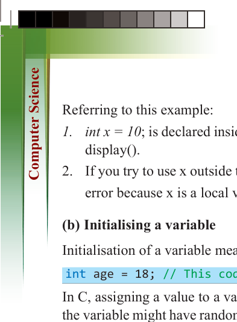
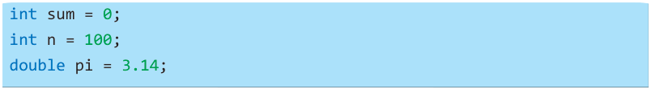

166
for Secondary Schools
Referring to this example:
1. int x = 10; is declared inside the display() function, so x can only be used inside display().
2. If you try to use x outside the function (like in main()), the program will give an error because x is a local variable and only exists inside display().
(b) Initialising a variable
Initialisation of a variable means assigning a value when declaring it. For example,
int age = 18; // This code declares and initializes 'age' with 1
In C, assigning a value to a variable before using it is important. If this is not done,

the variable might have random, incorrect data from memory, causing your program

to behave strangely. C allows you to set a value for a variable when you create it.


Examples of initialisation:

For simple variables like int or double, you can set the value right away:





int sum = 0;


int n = 100;


double pi = 3.14;


For local variables, you can use any expression to set the value. But for global or

static variables, you can only use constant values. This means the following:

(i) Local variables (variables declared inside a function) can be initialised using any type of expression, which can include calculations or even function calls.
For example:
int x = 5 + 3; // using an expression to set the value
(ii) Global variables (variables declared outside of any function) and static variables
(variables that keep their value between function calls) must only be initialised with constant values. A constant value is something that doesn’t change, like a number or a fixed string. For example:
int globalVar = 10; // constant value
You cannot use an expression like 5 + 3 or a function call to set the value of global
or static variables. They can only be initialised with simple, unchanging values. This rule ensures that global and static variables are set predictably and remain constant throughout the program.

ComputerScin